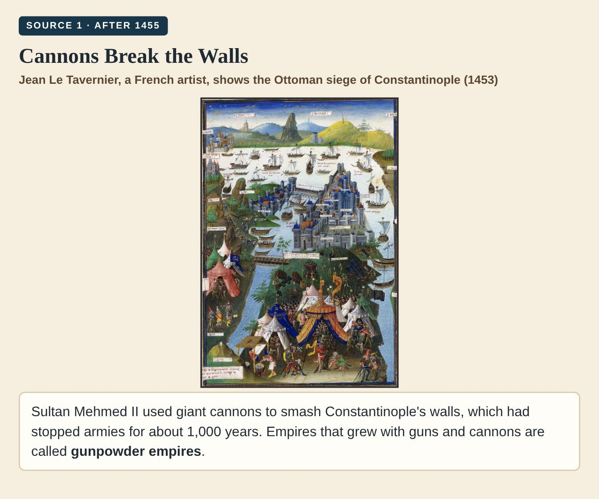

How it works: read the source pages → answer the question about today's big idea → read the fact file → write 1–2 sentences. Done = all parts green, then turn in at the bottom.
Word help (tap to open)
- Empire = one ruler or government controlling many lands and peoples
- Land empire = an empire that grows by marching armies into the lands next door
- Sea (maritime) empire = an empire that grows by ships, ports, and trading posts
- Gunpowder empire = an empire that grew strong with guns and cannons
- Primary source = something made by people who lived at the time: a letter, a speech, a picture, a law

Click the page to make it bigger.
Turn in your work
Your work saves on this device, so you can come back later. Your teacher sees it after you turn it in.
Sources: Jean Le Tavernier, siege of Constantinople (after 1455); Ottoman painting of Janissary recruitment from the Süleymanname (1558); Ogier Ghiselin de Busbecq, Turkish Letters (1550s, 1881 translation); Remezov Chronicle (about 1700); Jan Huygen van Linschoten, Goa market (1596); Cantino map (1502). Images public domain, via Wikimedia Commons.